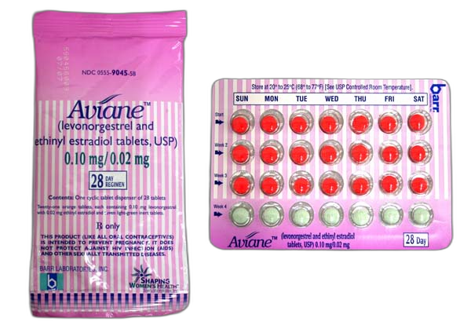
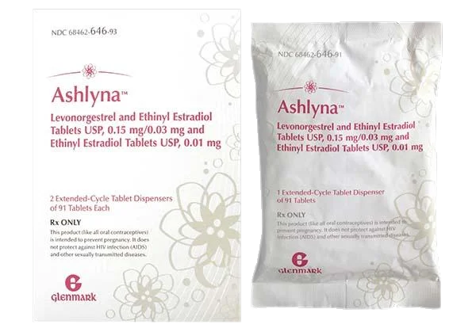
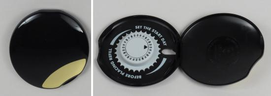
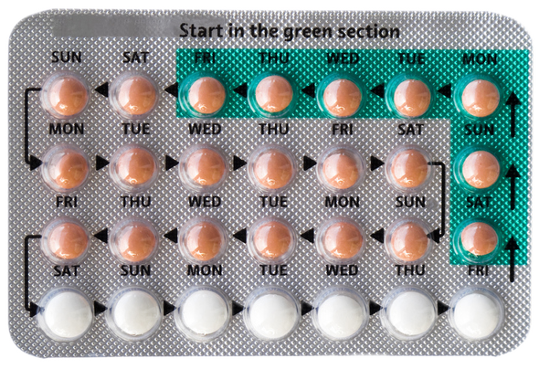

Abstract
This thesis explores and addresses the complex relationship womxn have with hormonal contraceptives (the pill, IUDs, patches and implants). It investigates systemic factors that cause a gap in communication and research into the medical products, leaving womxn with a lack of understanding about their physical and mental impacts.
What specifically stands out to me are the brand names of the hormonal contraceptives. By personifying these medical products with female names, such as Yasmin, Mirena, Zarah and Nikki, they seem to evoke the image of a likeable companion. Yet do they meet the expectations of a trusted friend? In this thesis, I included writings that personify the contraceptive product ‘Yasmin’. Further, I compare relationship experiences like navigating a friendship, finding a ‘match’ and the curiosity into relationships to the use of hormonal contraceptives and the process of finding the most suitable one.
My interest in this topic stems from my own experiences with birth control, as well as those of friends and other womxn. Moreover, my interest is fueled by my frustration about the lack of knowledge I have of my own body and the overlooked impacts of these contraceptive products.
The main sources for my research are Invisible Women by Caroline Criado Perez, This Is Your Brain on Birth Control by Sarah Hill, and The Promise of Happiness by Sara Ahmed. These sources provide valuable insights into gender biases, patriarchal structures and societal expectations.
Introduction
Hormonal contraceptives, including the pill, hormonal IUDs, patches and implants are one of the most popular methods womxn▶︎1①In this thesis I use the term ‘womxn’. It is one of a few lexical and social phenomena, including the adoption of ‘x’ in naming gender non-conforming individuals, genderqueer folxs, two spirit people, femmes, transgender folxs, and non-binary people (definition by UCI The Womxn’s Center). However, when referencing studies, I use the term ‘women’, as they categorize participants within a binary gender framework. use to manage fertility. According to a 2022 study by the United Nations, more than 400 million women worldwide make use of them.▶︎2②Departement Economische Sociale Zaken van de Verenigde Naties. “World Family Planning 2022”. www.un.org, New York, Verenigde Staten, Verenigde Naties, 2022, www.un.org/development/desa/pd/sites/www.un.org.development.desa.pd/files/files/documents/2023/Feb/undesa-pd-2022-world-family-planning.pdf. These medications release synthetic hormones to regulate ovulation and alter the uterine lining, preventing pregnancy. The introduction of the hormonal contraceptive pill (commonly known as “the pill”) in 1961 has played a vital part in giving womxn autonomy over their own bodies, improved access to education, and more economic independence. As a result, many womxn associate these medical products with a sense of empowerment.
My experience with hormonal contraceptives started when I was 16 years old. Like many other teenagers, I wanted to protect myself from getting pregnant and, specifically in my case, to improve my acne-prone skin. The combined hormonal contraceptive pill, prescribed by my GP, felt like a logical step. Years later, in my twenties, I started hearing stories of friends and other womxn experiencing side effects using hormonal contraceptives – from extreme mood swings to flattened emotions, increased bleeding to long-lasting headaches. It was only then that I began to understand the potential impacts of these products on the mind and body. This realization opened my eyes to an alternative, disempowering reality.
Since these encounters, I have increasingly questioned why I knew – and still know – so little about my own body and the effects of hormonal contraceptives. Not just me, but many womxn are often left underinformed, unsupported or disconnected from their own experiences with these medical products due to the gaps in communication, education and research.
In this thesis, I explore and address the systemic factors and societal expectations that contribute to the lack of awareness, understanding and critical perspectives on the hormonal contraceptives. By shedding light on these issues and womxn’s complex relationship with these products, I wish to contribute to greater awareness and dialogue on the impacts of hormonal contraceptives.
Note 1
Yasmin,
every morning starts with you.
We have a quick interaction. You take up a few seconds of my day, yet you are present in my body all day, all night.
You seem so innocent, but I doubt that.
I think you change me as a person, because I don’t always recognize myself with you. My mind and body respond in ways I don’t fully understand.
You are subtle, yet powerful.
Invisible, yet present.
Sometimes I wonder if you have
taken more than you have given me.
Chapter 1
Who is Yasmin?
How can Yasmin make us feel?
(The Branding and Effects of Hormonal Contraceptives)
The branding of hormonal contraceptives carries a notable pattern. Many brands of contraceptive pills and IUDs have female names: Yasmin, Aviane, Kariva, Skyla, Zarah, Camila, Alessa, Lucette, Ashlyna, Yaz, Jolessa, Kyleena, Hailey, Lyza, Nikki, Ocella, Zovia, Mili, Mirena▶︎3 ③Holland, Kimberly. “Birth Control Brands: How to Choose What’s Right for You.” Healthline, www.healthline.com/health/birth-control/birth-control-pill-brands.
FIG 1
Packaging of birth control pill Yasmin and Lucette
FIG 2

Packaging of birth control pill Aviane
FIG 3

Packaging of birth control pill Ashlyna
– the list goes on. This is no coincidence but a marketing strategy. The names evoke a sense of familiarity, trustworthiness, competence and warmth – with the last two being associated as stereotypical female characteristics.▶︎4 ④Pogacar, Ruth, et al. “The Power of a Feminine Brand Name.” Keller Center for Research, June 2022, kellercenter.hankamer.baylor.edu/news/story/2022/power-feminine-brand-name.They are designed to create a sense of comfort and subtly suggest that the medical products have no intention of causing any harm. After all, we would not think someone whom we can address by their first name to be suspicious.
The branding of medical products plays a big role in the medical industry. Pharmaceutical companies develop branded drugs that are protected by patents, which prevents cheaper generic versions to enter the market. For example, a contraceptive pill may have a generic name of ethinyl estradiol and drospirenone with a brand name Yasmin. When the patent expires, generics can become available.▶︎5 ⑤Haelle, T. (2023, September 21). Do generic drugs work as well as brand name? Here’s what to know. Premium. https://www.nationalgeographic.com/premium/article/brand-name-drugs-generics-cost#However, branded drugs often create recognition and loyalty, which encourages patients and doctors to request and buy the same product each time.
Apart from the gendered naming, the packaging design of the birth control pill and IUDs also reinforces female stereotypes. Since the 1960s, the contraceptive pills have come in various designs. A lot of them reflect traditional notions of femininity as they are packaged in boxes with shades of pink and pastel colors, gradients, serif typefaces and flowers. The first pill dispenser with an embedded calendar was even designed as a make-up compact.▶︎6 ⑥Packaging the pill. (2015, May 26). National Museum of American History. https://americanhistory.si.edu/explore/stories/packaging-pill
FIG 4
Organon “Starter Kit for Forgetful Women” (1993)
FIG 5
Advertisement for
compact-style Ortho (2000)
FIG 6

Ortho Personal Pack in “Onyx.”
Since the 1990s, the design of the pill has gone largely unchanged. The most notable shift is that more attention has gone to incorporating memory aids. The pills now come in a more structured pill strip with directional arrows and days of the week
FIG 7

Birth control pill strip
, instead of a compact-mirror case. This design reinforces a sense of regulation and makes the action of taking a pill each day more of a subconscious routine.
The overall aesthetics contribute to the marketed perception of innocence and control, shaping how the products are perceived. Yet, there is a difference between the marketed image and its actual effects. The reality is that many womxn experience significant side effects on the body and mind using hormonal birth control.
Hormonal contraceptives are designed to prevent womxn from getting pregnant by stopping their ovulation, ensuring that there is no egg to fertilize. When they are used perfectly, such as taking a birth control pill at the same time every day, there is a 99% effectiveness.▶︎7 ⑦NHS. “How Well Contraception Works at Preventing Pregnancy.” nhs.uk, 6 Nov. 2024, www.nhs.uk/contraception/choosing-contraception/how-well-it-works-
at-preventing-pregnancy.However, while these hormonal contraceptives successfully prevent pregnancy, the added sex hormones (either estrogen plus progastrin or progestin-only) don’t just alter womxn’s ovulation. A common misconception that even doctors have, is that IUD’s release hormones ‘locally’, which is simply not possible. Hormones (whether you have a birth control implant or IUD inserted, etc.) enter the bloodstream and endocrine system and thus will be picked up by all the cells in your body that have receptors for that hormone.▶︎8 ⑧Hill, Sarah E. This Is Your Brain on Birth Control: How the Pill Changes Everything. Avery, 2019, p. 89
The more commonly known and researched physical side effects, that are listed in the package leaflet, are headaches, weight changes, breakthrough bleeding, and more. Also, less common risks include increased changes of blood clots, high blood pressure or a stroke.▶︎9 ⑨“The Effects of Hormonal Birth Control on Your Body.” Healthline, 2 Nov. 2024, www.healthline.com/health/birth-control-effects-on-body.Apart from these physical effects, many of the cells that pick up sex hormones are located in the brain meaning that they can influence attraction, sexual motivation, stress, mood, emotion regulation, and more.▶︎10 ⑩Hill, Sarah E. This Is Your Brain on Birth Control: How the Pill Changes Everything. Avery, 2019, p. 89
One effect to highlight is the significant impact hormonal birth control can have on womxn’s mood.▶︎11 ⑪Hill, Sarah E. This Is Your Brain on Birth Control: How the Pill Changes Everything. Avery, 2019, p. 173Almost half of all women who go on the pill stop using it within the first year because of its side effects, with mood changes being the most frequently cited issue.▶︎12 ⑫Contraception Reviews | 6,000+ on Every Method | the Lowdown. thelowdown.com/all-reviews.While for some hormonal contraceptives successfully reduce symptoms of PMS (premenstrual syndrome: emotional and physical symptoms people get before their period), for others the use results in opposite effects. A 2018 study revealed that people using hormonal IUDs experience increased rates of anxiety, and a 2023 study found that users of the birth control pill have a 130% increased risk of depression, especially during the first 2 years of use.▶︎13 ⑬Catlett, Tess. “The Effects of Hormonal Birth Control on Your Body.” Healthline, 2 Nov. 2024, www.healthline.com/health/birth-control-effects-on-body#mental.This explains why some womxn say hormonal birth control makes them feel like they’re going ‘crazy’. These responses to the products emphasize the importance of finding the right contraceptive that fits each unique body, as the wrong one can have a great impact on your mental health.
This shows that hormonal products do not simply prevent pregnancy, they influence the whole female body, including the brain. Whether hormonal birth control positively or negatively affects womxn, there’s no denying that it changes womxn’s behavior.
Note 2
Yasmin,
I find our relationship confusing sometimes. People always told me you would bring me freedom and ease, yet I also experience discomfort. I wish you brought me clarity, yet I am left with more questions than answers.
Do I know who you really are? What is behind your polished appearance? What are your secrets? Who made you the Yasmin you are today?
I am aware that you change me as a person. You shape me in ways I cannot see, ways I am only beginning to understand now.
You have been here for decades, yet I do not know your full story, and I don’t think anyone does. Even those who introduce me to you seem uncertain of your
full effects.
Since almost everybody knows so little of you, I wonder: Can I trust you?
Chapter 2
What do we (not) know
about Yasmin?
(The Gender Bias in the Pharmaceutical Industry)
Most of what womxn know about their own health are probably things they know about men.▶︎14 ⑭Hill, Sarah E. This Is Your Brain on Birth Control: How the Pill Changes Everything. Avery, 2019, p. 215 This stems from systematic issues including who researches, invests in and profits from healthcare products and services: Big Pharma, the male-dominated pharmaceutical industry. It focuses on developing and marketing medical products and care that cost the least and generate the most profit, instead of prioritizing womxn’s health. This medical system is systematically discriminating against womxn, leaving a gap in knowledge and understanding of womxn’s health.▶︎15 ⑮ Criado Perez, Caroline. Invisible Women: Exposing Data Bias in a World Designed for Men, 2019, p.196
Historically medical education has been focused on the male ‘norm’, based on the assumption that there were no fundamental differences between male and female bodies. Womxn were seen as a smaller version of men, with the only difference being their reproductive organs.▶︎16 ⑯ Hill, Sarah E. This Is Your Brain on Birth Control: How the Pill Changes Everything. Avery, 2019, p. 225Although now we know that there are sex differences in every part of the body, even in our cells, the representation of the male body as ‘the human body’ continues to exist. An example of this is given by writer Criado Perez in her book Invisible Women, ‘a 2008 analysis of a range of textbooks recommended by twenty of the ‘most prestigious universities in Europe, the United States and Canada’ revealed that across 16,329 images, male bodies were used three times as often as female bodies to illustrate ‘neutral body parts’’▶︎17 ⑰Criado Perez, Caroline. Invisible Women: Exposing Data Bias in a World Designed for Men, 2019, p.197In a later research in 2017, analyzing the medical section in a large bookshop in London, Criado Perez noticed not much had changed. The covers of books, drawings of features common to both sexes and posters of the human anatomy featured mostly men or its body parts.
The lack of diversity in medical books also includes the absence of diversity in skin tones. A 2018 study of general medicine texts revealed that under 5% of the images included dark skin tones.▶︎18 ⑱Kaundinya, T., & V Kundu, R. (2021). Diversity of Skin Images in Medical Texts: Recommendations for Student Advocacy in Medical Education. In National Library of Medicine. National Institutes of Health. https://pmc.ncbi.nlm.nih.gov/articles/PMC8202324/This emphasizes the idea of the white male body as the ‘neutral’ human body. Chidiebere Ibe, a medical illustrator, began making illustrations of black bodies to address the underrepresentation. Ibe stresses that many medical symptoms and conditions look different depending on skin color, which makes diversity in medical training material very important.▶︎19 ⑲ Wikipedia contributors. (2025, February 7). Chidiebere ibe. Wikipedia. https://en.wikipedia.org/wiki/Chidiebere_Ibe#/
Apart from the visual diversity and underrepresentation, there’s a significant lack of research on the female body. Up until the early 1990s, most of what womxn have been told about their bodies and brains has come from research done almost exclusively on and by men.▶︎20 ⑳Hill, Sarah E. This Is Your Brain on Birth Control: How the Pill Changes Everything. Avery, 2019, p. 214And to this day, womxn are very often left underrepresented in medical research. Their bodies, including female animal bodies, are often argued to be too complex and variable to study.
It’s true, the female body is more complex. Womxn’s hormones change cyclically, which requires researchers to take their cycle phase into account. This makes collecting data more challenging. As a result, it takes a lot more time and can triple the amount of money spent on the research.▶︎21 ㉑Hill, Sarah E. This Is Your Brain on Birth Control: How the Pill Changes Everything. Avery, 2019, p. 220However, I argue that the inclusion of womxn in studies should be the norm and not just be left aside because it’s easier not to do so. Higher costs and increased time requirements do not justify the exclusion of womxn in research, since this can have significant impacts and consequences on their lives.
Criado Perez lists lots of examples of medical cases in her book that give a clear insight into the importance of sex-specific information, data and research. One example I found specifically alarming and therefore important to mention, is a review done in 2014 of a database on a cardiac resynchronization device (CRT-D, a more complex kind of pacemaker). This CRT-D is used to correct a delay in the heart’s electrical signals. In this case, the trials treated the male body as the default, with women only making up around 20% of the participants. Because of the low number of women, no significant difference was found after separating the data by sex. However, the review authors found that the data of female bodies was overlooked. As a result, hundreds of women were experiencing avoidable heart failure.▶︎22 ㉒Criado Perez, Caroline. Invisible Women: Exposing Data Bias in a World Designed for Men, 2019, p. 209
Gender bias in heart disease is an issue that strongly highlights the inequalities in medical research and care. The leading cause of death among womxn in The Netherlands, as well as the United States, is cardiovascular disease.▶︎23 ㉓Vrouwenhart. (2022, June 3). HartKliniek. https://www.hartkliniek.com/zorgaanbod/vrouwenhartDue to a lack of sex-specific research and awareness womxn are often misdiagnosed or experience delayed diagnoses. For example, within five years of a first heart attack, 47% of women die in comparison to 36% of men. Moreover, womxn very often receive wrong diagnoses such as asthma, anxiety or menopause, because womxn report years of ‘normal’ results or are being told that their symptoms are ‘all in their head’.▶︎24㉔M Johnson, H., & E Gorre, C. (2021). Addressing the Bias in Cardiovascular Care: Missed & Delayed Diagnosis of Cardiovascular Disease in Women. In National Library of Medicine. National Institutes of Health. https://pmc.ncbi.nlm.nih.gov/articles/PMC8666638/ The consequences of the bias are significant, which emphasizes the need for sex-specific research, as it can mean the difference between life and death.
The importance of more research also applies to the hormonal contraceptives, where gaps in knowledge remain. Over the years, research was mostly focused on safety and efficiency. There has been much attention to effects like blood clots, strokes, etc. This provided womxn with a sense of safety while using them, which is very important. However, up until very recently little research has been done on the effects of birth control on the brain. This means there are almost no insights into what it does to a person. Effects like social interactions, attention, learning and memory. But also, the non-brain part of the body like the immune system, the stress response and womxn’s gut hormones.▶︎25㉕Hill, Sarah E. This Is Your Brain on Birth Control: How the Pill Changes Everything. Avery, 2019, p. 90 When these impacts are not researched womxn will stay unaware of the full range of potential effects.
The overall gap in medical research causes womxn to very often be misunderstood, mistreated and misdiagnosed.▶︎26 ㉖Criado Perez, Caroline. Invisible Women: Exposing Data Bias in a World Designed for Men, 2019, p.196It leaves not only womxn but also often doctors short on information. The lack of knowledge about the female body has fostered an environment where the introduction of hormonal contraceptives has gone largely unquestioned, and the impacts and experiences of womxn’s using these products are still overlooked today. Researcher Sarah Hill states in her book This Is Your Brain on Birth Control “When more females are studied, female specific health issues including the birth control pill will also be studied.”▶︎27 ㉗ Hill, Sarah E. This Is Your Brain on Birth Control: How the Pill Changes Everything. Avery, 2019, p. 226It is time for the medical world to prioritize research on womxn’s health.
Note 3
Yasmin,
I hear others talk about you.
Some praise you, some resent you.
When I voice my doubts about you, most womxn can relate. Other people don’t understand me or don’t want to listen. I am told to be patient and appreciate what you offer me. They say my bad experiences with you are normal. That I should just deal with the consequences.
There is an expectation that I will accept you without complaint. When I question our relationship, people assume that I will totally reject you.
Maybe we’re just not made for each other. Maybe I expected you to be better. But that doesn’t mean you aren’t right for someone else.
I wonder, am I allowed to be unhappy with you? Am I allowed to demand something different, something better?
Chapter 3
Are we allowed to be unhappy
with Yasmin?
(The Use of Hormonal Contraceptives and Societal Gender Expectations)
How does Yasmin make me feel? A question that more and more womxn seem to ask themselves. Whereas lots of young womxn used to go on the pill, they are now looking more critically at hormonal contraceptives. This resistance towards hormonal contraceptives is not new, but since the turn of the century the popularity of the pill has been dropping year after year. ▶︎28 ㉘Esch, Carlijn van. “Toen vrouwen zich in de jaren zeventig afkeerden van de pil.” Volkskrant, 9 Dec. 2024, www.volkskrant.nl/binnenland/toen-vrouwen-zich-in-de-jaren-zeventig-afkeerden-van-de-pil-bfef3cbd.In the Netherlands for instance the use of the pill among people aged 18 to 24 has declined from 64% in 2017 to 46% in 2023. Moreover, 32% of women who are not using hormonal contraceptives choose to do so because they do not want to take hormones.▶︎29 ㉙Esch, Carlijn van. “Toen vrouwen zich in de jaren zeventig afkeerden van de pil.” Volkskrant, 9 Dec. 2024, www.volkskrant.nl/binnenland/toen-vrouwen-zich-in-de-jaren-zeventig-afkeerden-van-de-pil-bfef3cbd.They feel less attracted to dealing with hormones and their side effects, despite their contraceptive benefits.
Many womxn seek alternative ways of regulating their fertility. Recently natural forms of contraception became more popular, like fertility tracking. This aligns with the desire to avoid hormonal interventions and to have a more natural approach to fertility regulation. However, fertility tracking is not without risks. It requires a regular cycle, proper use and a motivated partner, which makes it less reliable compared to other contraceptives.
A study conducted by Rutgers in collaboration with the Dutch Association of Abortion Specialist (NGvA), analyzed 422 completed questionnaires from women who visited an abortion clinic and found that 49% of women visiting an abortion clinic did not use a contraceptive method. Two main reasons for this are a reluctance to use hormonal methods and adverse side effects from previous contraceptive use. Among the women who did use a contraceptive method (59%), almost one third chose a natural method such as amniotic fluid method or a fertility tracking app.▶︎30 ㉚Finkenflügel, R. & Rutgers, kennis- en expertisecentrum seksualiteit. (2024). Anticonceptiegebruik voorafgaand aan abortus [Report]. https://rutgers.nl/wp-content/uploads/2024/11/Rapport-Rutgers-Anticonceptiegebruik-voorafgaand-aan-abortus.pdfThis gives an insight into the growing interest of natural birth control and its consequences. Yet, there has not been any research on whether this shift is directly leading to any increase in abortions or birth rates in the Netherlands.
While more womxn are increasingly questioning and rejecting hormonal contraceptives, traditional gender roles and a societal expectation that womxn should use them remain. The responsibility of preventing a pregnancy is very often put on them and socially framed as a “womxn’s issue”. A 2023 survey of 1894 women (in Canada and the US) attending family planning clinics, shows that more than 65% reported that they experience a disproportionate burden of contraceptive use.▶︎31 ㉛Nguyen, Brian T., and Tamar L. Jacobsohn. “Men’s willingness to use novel male contraception is linked to gender-equitable attitudes: Results from an exploratory online survey.” Contraception - an International Reproductive Health Journal, July 2023, www.contraceptionjournal.org/article/S0010-7824(23)00063-X/abstract.This is a burden that is not limited to having medication put into your body and experiencing its impact, but also about the time, money, attention and stress that comes with it. For example, planning and booking appointments with your doctor, paying for the products, making sure you take the pill every day and the stress you have to deal with when you forget to do so.
Apart from that many womxn have to go through a process of trial-and-error to find their preferred birth control. Since there is no intense research on which hormonal contraceptive fits each unique body, it’s up to the womxn, with the advice of a GP or gynecologist, to find their ‘match’. Some struggle with this, while others quickly find their ‘ideal friend’ – be it Ashlyna, Hailey or Yaz. The journey of choosing, finding and using the right contraceptive can include years of trying out multiple contraceptives and having to experience their side effects.
Many cis men remain largely unaware of these realities of hormonal contraception. There is a cultural assumption that womxn are on the pill or have an IUD. Moreover, men seem to have little to no idea about what the products are, how they work and their side effects. At the same there are cis men interested in new forms of male contraceptives. In a 2023 multinational survey of 9342 reproductive-age men (in Canada and the US) more than 55% reported willingness to use novel male contraceptives.▶︎32 ㉜Nguyen, Brian T., and Tamar L. Jacobsohn. “Men’s willingness to use novel male contraception is linked to gender-equitable attitudes: Results from an exploratory
online survey.” Contraception - an International Reproductive Health Journal, July 2023, www.contraceptionjournal.org/article/S0010-7824(23)00063-X/abstract.Yet, the current available products are very limited. And although early trials of male birth control have shown effectiveness in preventing pregnancy pharmaceutical companies show little interest in developing or marketing them.▶︎33 ㉝Brueck, Hilary. “A Male Birth Control Pill That Dramatically Lowers Testosterone Levels Is Moving Forward Into a 3-month Trial.” Business Insider Nederland, 23 Mar. 2018,
www.businessinsider.nl/male-birth-control-pill-lowers-testosterone-3-month-trial-2018-3?international=true&r=US.This is partly due to the fact that there is the unwillingness of men to endure the drug’s side effects similar to those of women’s birth control.▶︎34 ㉞Donegan, Moira. “It’s Time for Men to Step up and Share Responsibility for Birth Control.” The Guardian, 2 Nov. 2020, www.theguardian.com/commentisfree/2019/jun/05/
male-birth-control-step-up-responsibility.
The imbalance in awareness and responsibility leaves many womxn feeling like they are in an unhealthy, sometimes even a toxic relationship with their hormonal contraceptive, trapped between the societal pressure to use hormonal birth control and their discomfort with the side effects. The taboo around the subject of menstruation and reproductive health makes many womxn feel isolated in their experiences. Moreover, emotional and physical distress and discomfort of womxn on hormonal birth control are very often normalized. As a result, many are expected to experience side effects without complaint, rather than being encouraged to demand better contraceptive options or support.
Sara Ahmed, a feminist writer and independent scholar, critiques in her book ‘The Promise of Happiness’, the “happiness duty”▶︎35 ㉟Ahmed, Sara. The Promise of Happiness. Duke UP, 2010, we.riseup.net/assets/406978/ahmed-the-promise-of-happiness.pdf. p. 59, the expectation that womxn will be happy by taking part in that which is considered ‘good’. She also addresses the idea of ‘I’m happy, if you’re happy’.▶︎36 ㊱Ahmed, Sara. The Promise of Happiness. Duke UP, 2010, we.riseup.net/assets/406978/ahmed-the-promise-of-happiness.pdf. p. 58In case of hormonal contraceptives this “happiness duty” is visible in how they are marketed and its societal perceptions. It promises to make womxn’s life and that of their male (sex)partner easier. Moreover, the use of these hormonal products is often framed as ‘good’ and ‘responsible’. Both should therefore bring the womxn a form of happiness. Yet, for the womxn that feel uncomfortable using these products, who’s happiness is being served? Whose happiness is being prioritized, and at what cost?
Asking these questions and being critical of hormonal birth control is not always appreciated. Womxn speaking or pointing out their concerns are “disrupting” the collective experience of happiness. This connects to Ahmed’s concept of the feminist “killjoy”. She argues the idea that feminists are “killing joy” simply by refusing to find happiness in objects that society promises will bring them fulfillment.▶︎37 ㊲Ahmed, Sara. The Promise of Happiness. Duke UP, 2010, we.riseup.net/assets/406978/ahmed-the-promise-of-happiness.pdf. p. 65Since hormonal birth control is widely seen as something that is liberating and empowering, many womxn don’t dare to speak out about their negative experiences.
Questioning or disrupting the status quo is not always easy or accepted but crucial for challenging societal norms and pushing for change. Vocalizing your dissatisfaction and sharing your experiences doesn’t mean you want to abandon hormonal contraceptives or discourage the use. Rather, it is about fostering more awareness, open dialogue, advocating for improvements and more contraceptive options.
Equally important is the improvement of education, both in schools and by medical experts.▶︎38 ㊳“Anticonceptie: Krijgen Vrouwen Voldoende Voorlichting?” Kassa - BNNVARA, 24 Nov. 2021, www.bnnvara.nl/kassa/artikelen/anticonceptie-worden-vrouwen-voldoende-voorgelicht.Many womxn feel that they will benefit from more information coming from their GP and support from their healthcare providers. For example, introducing mid-term evaluations where GPs check on their patients’ experiences could help womxn to address concerns and improve care.▶︎39 ㊴Baart, Eva. “In Gesprek Over Anticonceptie: ‘Ik Wil Weten Hoe Mijn Lichaam Werkt Zonder De Pil’” Red Pers, 26 Jan. 2025, redpers.nl/2025/01/19/in-gesprek-over-anticonceptie-ik-wil-weten-hoe-mijn-lichaam-werkt-zonder-de-pil.With that comes that womxn should feel more comfortable talking about these topics with their doctors and in spaces like universities. Open and safe dialog should be encouraged and stimulated and education gap must be reduced.
Note 4
Yasmin,
I don’t know whether we should continue our relationship. Maybe I should take a break from you. To get to know myself without you.
That doesn’t mean you aren’t right for someone else. But maybe you were never meant for me. I expected more or just need something else to comfort me.
I hope you can become a better or different version of yourself, one that brings me more certainty than questions.
I wish to talk about my experiences more, because I cannot ignore my doubts and don’t want to silence my thoughts.
Conclusion
This thesis led me to uncover the significant gap in research, knowledge and communication regarding hormonal contraceptives. These products have given womxn a form of freedom, autonomy and reproductive control, yet they come with overlooked and unknown physical and mental impacts. This leaves many womxn confused and frustrated using these hormonal products.
The brand naming and visual aesthetic of these products reinforce female stereotypes and the idea that they are harmless and free of discomfort. Although, by now, we know that these products are not ‘innocent’, as they affect womxn’s bodies and minds.
The analysis of systemic factors has revealed how the pharmaceutical industry and medical research are historically prioritizing efficiency and profitability over the understanding of womxn’s health. This systemic approach needs to change. More research should be done into womxn’s health and more specifically into hormonal birth control. Greater investments should go into the studies of (long-term) effects on the brain and body, as well as other contraceptive alternatives. Not only for womxn, but also contraceptive options for men.
However, research alone is not enough. Womxn should not alone have to deal with the burden of contraception. There should be an equal distribution of responsibility. Better education can improve the overall awareness of the burden, the effects of hormonal contraceptives and womxn’s experiences.
Ultimately, there is a need for prioritizing womxn’s health, challenging societal expectations and fostering a more open and supportive dialogue around contraception. We all, including men, must work towards a future in which womxn are truly informed, comforted and empowered in their reproductive choices.
Bibliography
Ahmed, Sara. The Promise of Happiness. Duke UP, 2010, we.riseup.net/assets/406978/ahmed-the-promise-of-happiness.pdf.
ANP. Rutgers: 1 op 7 jonge vrouwen laat pil of spiraal liggen. (2024, January 31). Het Parool. parool.nl/nederland/rutgers-1-op-7-jonge-vrouwen-laat-pil-of-spiraal-liggen-b877c6f8/.
“Anticonceptie: Krijgen Vrouwen Voldoende Voorlichting?” Kassa - BNNVARA, 24 Nov. 2021, bnnvara.nl/kassa/artikelen/anticonceptie-worden-vrouwen-voldoende-voorgelicht.
Baart, Eva. “In Gesprek Over Anticonceptie: ‘Ik Wil Weten Hoe Mijn Lichaam Werkt Zonder De Pil.’” Red Pers, 26 Jan. 2025, redpers.nl/2025/01/19/in-gesprek-over-anticonceptie-ik-wil-weten-hoe-mijn-lichaam-werkt-zonder-de-pil.
Brueck, Hilary. “A Male Birth Control Pill That Dramatically Lowers Testosterone Levels Is Moving Forward Into a 3-month Trial.” Business Insider Nederland, 23 Mar. 2018, businessinsider.nl/male-birth-control-pill-lowers-testosterone-3-month-trial-2018-3?international=true&r=US.
Catlett, Tess. “The Effects of Hormonal Birth Control on Your Body.” Healthline, 2 Nov. 2024, healthline.com/health/birth-control-effects-on-body#mental.
Contraception Reviews | 6,000+ on Every Method | the Lowdown. thelowdown.com/all-reviews.
Criado Perez, Caroline. Invisible Women: Exposing Data Bias in a World Designed for Men, 2019.
De Graaf, Hanneke, et al. Monitor Seksuele Gezondheid 2023. Rutgers, 2023, rutgers.nl/wp-content/uploads/2024/09/Rapport-monitor-seksuele-gezondheid-2023.pdf.
Departement Economische Sociale Zaken van de Verenigde Naties. World Family Planning 2022. United Nations, 2022, un.org/development/desa/pd/sites/www.un.org.development.desa.pd/files/files/documents/2023/Feb/undesa-pd-2022-world-family-planning.pdf.
Donegan, Moira. “It’s Time for Men to Step up and Share Responsibility for Birth Control.” The Guardian, 2 Nov. 2020, theguardian.com/commentisfree/2019/jun/05/male-birth-control-step-up-responsibility.
Ersoy, S., Van Hulzen, D., Ersoy, S., & Van Hulzen, D. “Abortusklinieken Zien Vaker Jonge Vrouwen Die Anticonceptie Wantrouwen.” NOS, 14 July 2023, nos.nl/artikel/2482558-abortusklinieken-zien-vaker-jonge-vrouwen-die-anticonceptie-wantrouwen.
Esch, Carlijn van. “Toen Vrouwen Zich in de Jaren Zeventig Afkeerden van de Pil.” Volkskrant, 9 Dec. 2024, volkskrant.nl/binnenland/toen-vrouwen-zich-in-de-jaren-zeventig-afkeerden-van-de-pil-bfef3cbd.
Hill, Sarah E. This Is Your Brain on Birth Control: How the Pill Changes Everything. Avery, 2019.
Holland, Kimberly. “Birth Control Brands: How to Choose What’s Right for You.” Healthline,www.healthline.com/health/birth-control/birth-control-pill-brands.
Johnson, H. M., & Gorre, C. E. “Addressing the Bias in Cardiovascular Care: Missed & Delayed Diagnosis of Cardiovascular Disease in Women.” National Library of Medicine, National Institutes of Health, 2021, pmc.ncbi.nlm.nih.gov/articles/PMC8666638/.
Kaundinya, T., & Kundu, R. V. “Diversity of Skin Images in Medical Texts: Recommendations for Student Advocacy in Medical Education.” National Library of Medicine, National Institutes of Health, 2021, pmc.ncbi.nlm.nih.gov/articles/PMC8202324/.
Khaddari, R., & Sevil, M. “De Pil Verliest Aan Populariteit, Maar Wat Is Het Alternatief? ‘Met Je Vruchtbaarheid Wil Je Geen Fouten Maken.’” Het Parool, 1 Feb. 2025, parool.nl/amsterdam/de-pil-verliest-aan-populariteit-maar-wat-is-het-alternatief-met-je-vruchtbaarheid-wil-je-geen-fouten-maken-bf75f133/.
Khaddari, R., & Sevil, M. “Helft Vrouwen Heeft Ernstige Pijn Bij Plaatsen Spiraal – Waar Blijft De Verdoving? ‘Krijgen Alleen Paracetamol.’” Het Parool, 28 Jan. 2025, parool.nl/nederland/helft-vrouwen-heeft-ernstige-pijn-bij-plaatsen-spiraal-waar-blijft-de-verdoving-krijgen-alleen-paracetamol-b053c4c9/.
NHS. “How Well Contraception Works at Preventing Pregnancy.” nhs.uk, 6 Nov. 2024, nhs.uk/contraception/choosing-contraception/how-well-it-works-at-preventing-pregnancy.
Nguyen, Brian T., and Tamar L. Jacobsohn. “Men’s Willingness to Use Novel Male Contraception Is Linked to Gender-Equitable Attitudes: Results from an Exploratory Online Survey.” Contraception - an International Reproductive Health Journal, July 2023, contraceptionjournal.org/article/S0010-7824(23)00063-X/abstract.
Obdeijn, L. “‘Hormonentroep’? De ‘Pil’ Is Niet Meer Vanzelfsprekend.” Het Parool, 16 Apr. 2021, parool.nl/nederland/hormonentroep-de-pil-is-niet-meer-vanzelfsprekend-b38111b5/.
Packaging the Pill. (2015, May 26). National Museum of American History, americanhistory.si.edu/explore/stories/packaging-pill.
Pells, Rachael. “The Untold Story of the Contraceptive Pill.” WIRED, 27 Oct. 2021, wired.com/story/contraceptive-pill-the-lowdown.
Pogacar, Ruth, et al. “The Power of a Feminine Brand Name.” Keller Center for Research, June 2022, kellercenter.hankamer.baylor.edu/news/story/2022/power-feminine-brand-name.
Rothengatter, Siem. “De Toekomst Van Anticonceptie.” Red Pers, 10 Jan. 2025, redpers.nl/2025/01/10/de-toekomst-van-anticonceptie.
Rutgers. Anticonceptiegebruik in Nederland – Rutgers. 10 Sept. 2024, rutgers.nl/onderzoeken/anticonceptiegebruik-in-nederland/.
Van Gaalen, E. “Jongeren Hebben Vaker Onbeschermde Seks: Pil En Condoom Raken Verder Uit De Gratie.” Het Parool,22 Jan. 2024, parool.nl/nederland/jongeren-hebben-vaker-onbeschermde-seks-pil-en-condoom-raken-verder-uit-de-gratie-b30f5f4d/.